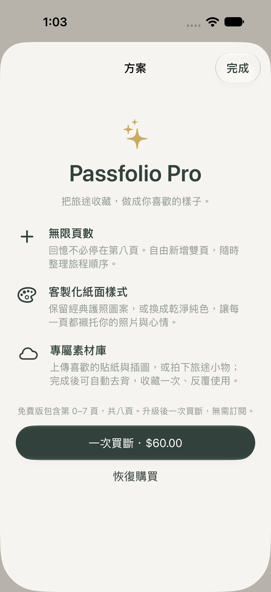

MORE PAGES
故事，還有下一頁。
解鎖無限頁數，自由新增頁面，整理旅程順序。從一趟週末小旅行，到一段長長的冒險，都能繼續記下去。
PASSFOLIO PRO / MORE ROOM TO REMEMBER
把旅途收藏，做成你喜歡的樣子。
想多記幾頁、多一點變化，
也想把路上遇見的小東西，變成自己的素材？
Passfolio Pro，為你的故事留出更多空間。
一次買斷，無需訂閱。實際售價以 App Store 顯示為準。

MORE PAGES
解鎖無限頁數，自由新增頁面，整理旅程順序。從一趟週末小旅行，到一段長長的冒險，都能繼續記下去。
YOUR KIND OF PAPER
客製化紙面樣式，保留經典護照圖案，或換成乾淨純色。為照片、文字和當天的心情，選擇喜歡的底色。
YOUR PERSONAL COLLECTION
上傳喜歡的貼紙與插圖，或拍下旅途小物，建立專屬素材庫。完成後可自動去背，收藏一次，就能在不同頁面反覆使用。
FIND YOUR WAY TO KEEP MEMORIES
| 功能 | 免費版 | Passfolio Pro |
|---|---|---|
| 照片、票根、文字自由編排 | 包含 | 包含 |
| 收集旅行足跡 | 包含 | 包含 |
| 記錄頁數 | 8 頁（第 0–7 頁） | 無限頁數 |
| 新增頁面與整理順序 | — | 包含 |
| 客製化紙面樣式 | — | 包含 |
| 專屬素材庫與自動去背 | — | 包含 |
| 付費方式 | 免費使用 | 一次買斷，無需訂閱 |
方案內容與購買價格以 App 內正式版本及 App Store 顯示為準。去背效果依圖片內容而異。
不用一次記下整個世界。
從你想留下的那一刻開始。